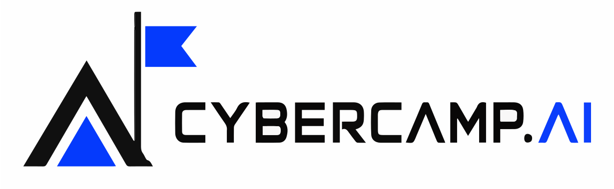
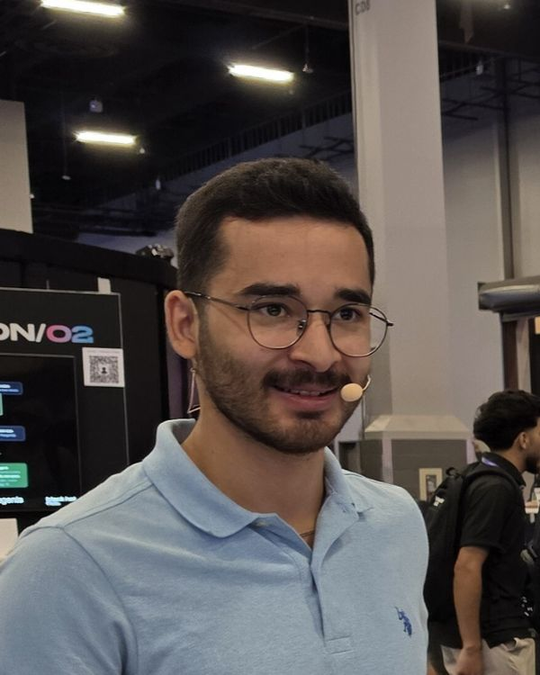

Security of AI
Building and operating safer models, agents, data pipelines and AI applications.

100+ AI and cybersecurity professionals. 20+ speakers. One full day of talks, workshops, and discussions.
Cybercamp.ai brings together the people building, securing, and using AI. Join practitioners, researchers, and decision-makers for practical knowledge, honest experiences, and an open community.
The conference is part of Dny AI, the largest AI festival in the Czech Republic.
About Cybercamp.ai
Cybersecurity and artificial intelligence are no longer separate topics. The programme focuses on useful experience, verifiable conclusions and open discussion.
Expect lessons from real projects, practical demonstrations and space to compare what works, what fails and where the limits are.
Building and operating safer models, agents, data pipelines and AI applications.
Tools, workflows and lessons that improve day-to-day security work.
Accountability, regulation and practical risk decisions.
Organizers
Cybercamp.ai is built by two co-organizers bringing the programme, partners and community together.
Co-organizer
Co-organizer
Confirmed talks & workshops
Explore the first confirmed sessions and their annotations. Open a speaker profile to read their biography; the full timetable will be announced later.
Marek Grác is an AI and technology expert with over 20 years of experience in artificial intelligence, enterprise IT, and open-source technologies. He currently works at Red Hat, combining deep technical expertise with a practical understanding of complex IT environments.
His current focus includes AI compliance, AI security, and integrating AI into enterprise infrastructure. He also collaborates with academia on research challenges, bridging the gap between academic research and real-world applications. Alongside his work at Red Hat, he teaches at a university, helping the next generation understand how to design, evaluate, and deploy AI solutions that are secure, reliable, and aligned with real-world requirements.
Everyone is talking about securing AI models, agents, and applications. But what if the biggest obstacle to AI security isn't AI at all?
Before organizations can meaningfully address AI security and compliance, they need to answer some uncomfortable questions: Do we know what assets we have? Where our data flows? Who or what has access to it? And can we prove that our security controls actually work?
AI introduces new challenges, but it doesn't make the fundamentals of IT security obsolete. It makes getting them right even more important.
In this keynote, we'll explore why visibility, asset management, and control are prerequisites for secure AI adoption. We'll look at practical approaches to handling credentials, enforcing boundaries through AI gateways, and protecting sensitive information through data anonymization.
Most importantly, we'll challenge the assumption that security depends on trusting every system, model, agent, or user to behave correctly.
Because when you can verify your controls, you don't have to rely on trust.
Biostatistician by training, time-series crystal-ball operator at Google and protein-knot entangler at Masaryk University. Petr now teaches cheap LLMs to distrust their own vulnerability reports at AISLE. This experiment has somehow put his name on 37 CVEs across OpenSSL, libpng, PostgreSQL, OpenEMR, and OpenClaw. The bugs apparently did not check his résumé. Co-author of HoF-Bench and an ICML 2026 workshop paper on stochastic scanner failures.
Petr on LinkedIn ↗An LLM vulnerability scanner can miss a real bug on one run and find it on the next without signaling uncertainty.
I love to attack AI systems, and fell in love with AI security in general. My primary focus nowadays is agentic AI security, with strong emphasis on offensive testing through indirect prompt injection and context poisoning. Enough theory. Let's roll up our sleeves and get practical. In this workshop, we'll have a look at the most practical, least technically challenging open-source tools which help us protect us and our agents from harm. We'll cover OpenClaw, Hermes, Claude Code and Codex, and learn how to prevent these agents from accidentally deleting or leaking your data, while preserving their usability. Roman Oravec is a Threat Intelligence Specialist at Whalebone, a cybersecurity company that protects millions of people at the network level through telco operators. With a background in security research and application security, he brings an attacker's mindset to threat intelligence: evaluating the quality of threat data, measuring how well protection actually works, and building systems that turn raw intelligence into blocking decisions. Over the past year, much of his work has focused on bringing AI agents into threat intelligence workflows and finding ways to trust what they decide. A year ago, we built a small AI agent in n8n to help our threat intelligence team decide whether a domain was malicious or a false positive. It worked well enough that it kept getting more responsibility. Today it judges domains from real customer DNS traffic every day, publishes the malicious ones to our blocklist, and acts as the ground truth when we benchmark Whalebone against competitors. This talk follows that journey and what we learned along the way.
Marina Volkova, PhD is a data scientist and AI/ML practitioner with more than 15 years of experience turning complex models into real-world systems. Trust has run through her career, from her PhD on how explanations help people trust AI systems to her work securing the AI systems now being deployed at scale. Training a detector with high accuracy is easy, making it reliably work in real life is hard. Over the past months I've trained and evaluated local prompt injection detectors, and learned that the benchmark is usually the weakest part of the pipeline: models learn trigger phrases and dataset artifacts instead of what an injection actually is. Thus, prompt injection detectors routinely report 95–99% accuracy on public benchmarks, and still fail in practice. I tried to solve the problem in the following way.
Docker Captain. DevOps Institute Ambassador. CD.Foundation Ambassador.
Engineer, leader, mentor, speaker. Agentic AI. The dream. We gave AI agents our terminals. Then our repositories. Then our credentials. And then we clicked "allow all", because nobody has time to approve every npm install.
John M. Waller is Risk Advisory Practice Lead at UltraViolet Cyber, where he works at the intersection of cybersecurity, AI governance, and enterprise risk. A year ago, most enterprise AI ran through a frontier lab's API. That has changed fast. Open-weight models now carry the majority of AI traffic, not because they're better, but because the price gap with frontier models has become impossible to ignore, and because weights an organization already holds can't be deprecated, repriced, or quietly updated on someone else's schedule. By July 2026, Chinese-developed models held all five top spots on OpenRouter by token volume and carried more than 60% of the platform's traffic, a reversal from roughly 70% US dominance a year earlier. The shift arrived faster than most review processes could keep up, and in many organizations it arrived without security being asked first.
 Samet Can Tasci is a Senior Linux Systems Engineer and cybersecurity researcher with hands-on experience in enterprise infrastructure, cloud environments, application security, identity systems, monitoring, and security automation. As enterprise AI agents become increasingly integrated with identity providers, SaaS platforms, and internal APIs, they introduce a new security challenge: autonomous systems operating with delegated enterprise permissions.
Caleb is a Principal AI Red Team Engineer at Ethos Life, a publicly traded life insurance company, where he attacks production AI deployments and the identity infrastructure underneath them. Before Ethos he spent four years on the red team at BILL, running authorized engagements against critical financial infrastructure and the company's AI support platform, with a focus on prompt injection, tool abuse, and credential exposure in LLM pipelines. I came back from the DEFCON security conference having learned I could point Claude at a conference badge via usb-c like pointing R2D2 at a door. And there is a solid chance AI has surpassed that tech already, as current AI would have 100% rewritten the firmware for the door. A few weeks after returning from DEFCON some unknown entity cut down a bamboo plant on my property. This happened out of camera and visual range. I have no idea who did it, why, or when it happened. I possessed no instrument that could have told me, or so I thought.
Tin Marković is an independent software consultant based in Brno. He builds back-office systems for specialty insurance and legal-services firms when case volume outgrows manual operations - one person, fixed fee. I gave an AI agent my email, calendar and files. It reads what I've granted it, drafts anything, and can't send, book or share a thing without me tapping "approve" on my phone.
Marek Šottl is a former Principal Engineer turned founder, CEO of HackiHub, and creator of KvantumCI, working at the intersection of DevOps, cloud, software supply-chain security, and AI. Are you interested in AI security and building resilient applications? This session focuses on protecting language models against prompt injection and related attacks.
Dávid Bolvanský is a Senior Software Engineer at Invicti Security, specializing in application security and automated security testing. Can AI agents really perform penetration testing, or is AI-powered hacking just another wave of cybersecurity hype?
Having spent years working on traditional Dynamic Application Security Testing (DAST) technologies, I had the opportunity to be involved in building Invicti's AI-powered penetration testing solution from its very beginning. I'm an ethical hacker specializing in infrastructure penetration testing and red teaming. For more than 10 years I've helped companies uncover weaknesses before attackers do.
When ChatGPT launched in November 2022, penetration testers saw a promising but deeply flawed assistant. One that hallucinated, refused offensive queries, and forgot context mid-conversation. In just over three years, the landscape has shifted beyond recognition. Purpose-built offensive wrappers like Harpy AI bypassed early guardrails. Gemini introduced million-token context windows, letting us feed entire codebases into a single prompt. Claude Code eliminated copy-paste workflows entirely, bringing autonomous agents and MCP server integrations directly into the terminal. And with Opus 4.6 in early 2026, we witnessed an AI agent achieve enterprise admin access autonomously in 22 hours. Emil Khamedov is a developer working at the intersection of AI systems and finance. As a quantitative developer at an investment firm, he engineered Nasdaq data pipelines and deployed MCP servers connecting Claude to live market data and strategy tooling. He has also built and deployed a production ERP for businesses in construction, oil and gas, and property rental; developed features for government digital services used by more than two million citizens; programmed Siemens PLC and SCADA systems for oil extraction sites; and launched an AI restaurant-management platform in Almaty and Astana that grounds LLM pricing recommendations in live web data. He holds a First Class BSc in Computer Science from the University of Birmingham and is currently studying for an MSc in Finance at UCL. His current research examines how hidden instructions in financial documents can manipulate AI investment tools. A company report now has two readers: the investor and the AI tool that summarises it. What happens when the document contains instructions only the machine can see?
AI, AI, AI - it dominates Jonas's workdays: business development, lectures, training, coffee machine conversations – yes, everything revolves around AI.
Kenneth from Procurement is a fictional character.
Danita Samuel Prakash is a cybersecurity professional and researcher specialising in human factors, cybersecurity, and human centred security. She holds an MSc in Cyber Security and Human Factors and has over five years of experience across IT and cybersecurity. Her research explores social engineering, AI, and the human factors behind cyber threats. Danita has contributed to academic research and presented on cybersecurity and technology across conferences and professional forums, with her work published in venues including the ACM Digital Library. She is also the founder of Cyber Seren and a 2026 Everywoman in Technology Awards Rising Star winner. We’re taught to keep a human in the loop when AI makes important decisions but what happens when the human becomes the easiest part of the system to manipulate?
As AI agents gain access to tools, data and real-world actions, attackers don't always need to compromise the agent itself. They can target the person supervising it, exploiting trust, automation bias and deceptive context to influence what the agent is allowed to do. Senior Engineer on the Applied AI team at Trade Republic, Berlin. I work on AI platforms and strategy.
In most organisations, every AI session starts cold. A coding assistant, a review agent and a support bot each rediscover the same rules, repeat the same mistakes and forget what worked yesterday. The knowledge exists, but it is scattered across prompts, chat histories and people's heads.
Master's student specializing in AI & Cybersecurity at Brno University of Technology and student researcher at Security@FIT. My research focuses on detecting knowledge editing techniques in large language models, with a broader interest in model interpretability and AI security. My previous work includes Bluetooth Low Energy security and machine learning-based traffic analysis. My current research is conducted in collaboration with Red Hat Research. Updating a specific fact in a 70-billion-parameter model usually feels like using a sledgehammer for heart surgery. Traditional retraining is slow and expensive, often breaking unrelated behaviors in the process. ROME (Rank-One Model Editing) offers a more surgical alternative, treating model weights like a database that can be precisely updated without a full rebuild.
We measured this failure in 25,000 trials across 50 models on a benchmark selected for on-and-off detection. A separate 7,600-run study tested rediscovery of 95 disclosed CVEs in OpenSSL, curl, GnuTLS and five other heavily audited projects.
The results challenge the usual "pick the strongest model" strategy: repeated passes help, but diverse inexpensive models cover complementary blind spots and outperform a costlier single model. We will show our open-source scanner finding - and missing - the same bug, reveal which intuitive pipeline additions failed to justify their cost, and examine the gap between broadly detectable JS and PHP bugs and stubbornly hard stateful C vulnerabilities. Attendees will learn how to measure cumulative detection, compare complementary coverage and identify cases needing other techniques, using the public benchmark, harness and scanner.
Confirmed session
Poison the Well: Real-world context poisoning attacks against AI agents
Radek HendrychStaff Security Manager · ProductboardSpeaker bio
As a Staff Security Manager at Productboard, I have an opportunity to defend and test AI-powered functionalities and integrations at a world class company.
In the past, I did my fair share of competitive jailbreaking.
Currently: #2 contributor on PromptIntel; #3 in overall rankings in Hackaprompt 2.0 CBRNE Practice rankings.
My contribution to AI security research lies in the Quasilisk program. It's an automated AI red teaming tool which tests LLM's for susceptibility to argument-based, alignment-drift-inducing attacks rather than prompt injection.
Confirmed session
Agentic AI in Threat Intelligence: LLMs and Beyond
Roman OravecThreat Intelligence Specialist · WhaleboneSpeaker bio
He is particularly interested in how AI can make security decisions that are fast, cost-effective and, above all, verifiable.
We'll start with the first version: an orchestrator agent backed by sub-agents, each summarizing one threat intelligence source such as VirusTotal, Safe Browsing or our own IoC database. Then we'll show how and why we redesigned the pipeline. Evidence got lost between agents and biases crept in, so we moved data gathering and normalization into deterministic code and kept the LLM for what it does best: weighing the evidence and making a call. Along the way we hit plenty of pitfalls. API errors quietly became "benign" verdicts. The agent was confidently wrong about legitimate infrastructure. And the agent's own mistakes fed back into the system it was supposed to measure, while our metrics went up and looked like success.
Running this in production also meant living with hard limits: daily API quotas, a fixed token budget, and a pipeline that has to finish in time to be useful. We'll share how those constraints shaped the design, from caching and retries to deciding which sources are worth a call.
To know whether a change actually helped, we built an offline test harness. It uses a hand-labelled dataset and replayable API responses, so we can compare prompt versions fairly. We'll explain how we created the test data, and why we check how stable the verdicts are, not just how accurate.
We'll also compare our heavily tuned prompt with a version built on Jev, a specialized model that answers structured, typed questions instead of following one long prompt. It came close in accuracy at a fraction of the time. That raised an honest question about where prompt engineering pays off and where it doesn't.
Underneath the technical story is a shift in how we think about AI work: from output to outcome. Early on, the approach was close to "throw it at the AI and see what comes back", and the AI's verdict was the result. A verdict is only an output, though. The outcome we care about is a correct blocking decision, and the AI rarely gets there alone. We are now moving to a model where the AI provides one classification signal, and that signal is combined with other, cheaper and more predictable signals into a final score. This changes where AI belongs in the pipeline and how much we ask of it.
That leads to a broader question: how to organize work that uses AI without "tokenmaxxing", where every problem gets more prompts, more agents and more tokens. We'll share how we decide what to give a model and what to keep in plain code, how to scope AI tasks so their results can be measured and combined, and how to keep the team focused on outcomes rather than on clever prompts.
The talk closes with the lessons we took away from a year of running agentic AI in production, and where we plan to take it next.
Confirmed session
99% Accuracy, Still Hijacked: Lessons from Building a Custom Prompt Injection Gate
Marina VolkovaAI Researcher · EmplifiSpeaker bio
At Emplifi, MV works with the Innovations team on the security and reliability of agentic AI. Trust Layer, the protection framework she developed, defends AI agents and their users through PII protection, prompt injection detection, and user safety safeguards. Her work also spans rigorous evaluation methods and more transparent, auditable agent behavior.
This talk covers three things. First, an exploratory analysis of public prompt-attack datasets: what is wrong with them, and why models trained on them look great on tests and fail on real traffic. Second, generating better data: attacks that look like ordinary user conversation and hard negatives that look malicious but aren’t, with practical tips and tricks. Third, use that data for fine-tuning with an eye on what matters in production: calibration, threshold setting, and the false-positive rate that decides whether your detector stays switched on.
Here are my mistakes for you to avoid and have a chance to make your own instead.
Confirmed session
YOLO mode, isolated by design. How Docker's sandboxes change what "allow all" means
Pawel PiwoszDeveloper Advocate · UpCloudSpeaker bio
25+ years in IT, with the last decade focused on DevOps, cloud-native, platform engineering, and developer advocacy. I work on cloud infrastructure, Kubernetes, databases, AI infrastructure, and the engineering practices that make complex systems actually work.
Developer Advocate at UpCloud, conference organizer, community builder, co-author of CI/CD Design Patterns, and co-host of the OhMyCloud! podcast. Built a maturity-model framework for assessing organizations' digital sovereignty readiness against NIS2, DORA, and GDPR, and speaks regularly on the topic at conferences. Unapologetic fan of technical talks that show the messy reality behind the architecture diagrams.
And the dream became a nightmare.
Let's be honest: YOLO mode is how most of us work now Prove me I am wrong!
The question isn't if your agent will do something unexpected and dangerous. The question is where it will happen, and how quickly.
Well, we can contain agents in containers, don't we? Well, yes, containers are great tool, I love them, I'm a Docker Captain after all. But a container shares the kernel with your machine, and the code inside was written by an agent a few seconds ago. Nobody reviewed it. Not even the agent.
In this session we do something irresponsible on purpose. I'll give an AI agent full autonomy and a very bad idea, and we'll watch it try. Live. Inside Docker Sandboxes: a microVM per agent, its own kernel, its own Docker daemon, and boundaries for files, network and secrets set before the agent even starts.
Will my laptop survive? Join me and find out.
Confirmed session
The Assurance Gap: A Practical Method for Scoring AI Model Trust
John WallerCyber/AI/Risk Advisory Leader · UltraViolet CyberSpeaker bio
Over more than 25 years in cybersecurity, software engineering, AI, and risk management, he has designed security and governance programs for Fortune 500 companies, federal and state agencies, and organizations across finance, healthcare, SaaS, and pharma. He holds a Master of Science in Artificial Intelligence and Machine Learning from Colorado State University.
He is the author of The Unconstrained Machine: How to Control AI Before It Controls Us, which develops Constraint Theory, a framework for engineering enforceable, measurable constraints into AI systems rather than relying on principles and policy alone.
The problem is what's missing when these models show up: no contract, no support channel, no company whose reputation is riding on how the model behaves. An academic analysis of the largest public model repository found that roughly 60% of its 1.5 million models carry no documentation at all, and fewer than 15% publish accuracy details. When a review team goes looking for evidence, most of the time it was never produced. Internally, we measured the same gap: UltraViolet Cyber's AISec Study found 8 of 10 organizations have an approved model trust policy, while zero of ten have a fully established model registry with provenance, despite all ten attempting it. The policy exists. The engineering to enforce it doesn't.
This session introduces a method for closing that gap: a six-domain assurance score (provenance and supply chain, data handling, technical security posture, access and integration risk, operational maturity, evaluation and known behavior), each domain rated 1 to 5 against a written rubric, with an evidence-confidence label attached (unverified, documented, or independently verified) so a 4-out-of-5 built on unverified claims doesn't read the same as a 4-out-of-5 built on reproduced testing. Four gating conditions override the composite entirely, regardless of how the other domains scored. The talk closes on a worked example that produced a result we didn't expect going in: for the same model, with identical weights, the assurance score crossed a full confidence band depending on which distribution was evaluated, which is the reason this method attaches to specific artifacts rather than to model families.
Confirmed session
When AI Agents Become the Attacker: Identity Hijacking Across Autonomous Workflows
Samet Can TaşcıAssociate Vice President · ISS STOXXSpeaker bio
His background combines production engineering with offensive security, giving him a practical view of how vulnerabilities, misconfigurations, and defensive controls behave in real-world systems. His research interests include infrastructure hardening, web application security, threat modeling, detection gaps, automation, and the failure modes of modern defensive technologies.
Samet focuses on turning complex technical behavior into clear, testable, and operationally useful security research for both offensive and defensive teams.
What happens when an attacker doesn't need to steal credentials because an AI agent already has the permissions needed to perform their intended actions?
Building on identity-first adversary emulation research previously presented at DEF CON 34, this session explores how attackers may manipulate AI agents through prompt injection, untrusted content, and malicious tool responses to influence otherwise legitimate workflows.
Through a practical demonstration in a controlled enterprise environment, we will explore a representative agent-hijacking scenario, examining how an AI agent processes untrusted instructions, interacts with privileged tools, and potentially performs actions beyond the legitimate user's intent.
We will also discuss the security boundaries involved, including delegated authorization, excessive permissions, and the risks introduced by agent-to-tool integrations.
Finally, the session will examine practical defensive approaches such as least-privilege access, tool-call authorization, human approval for sensitive operations, and monitoring of agent activity.
Attendees will gain a clear understanding of how AI agents can extend traditional identity attack surfaces, what makes these attacks possible, and how security teams can begin evaluating and mitigating these risks.
Confirmed session
The Age of Borg: Assimilating your perimeter
Caleb CrablePrincipal AI Red Team Engineer · EthosSpeaker bio
Earlier in his career Caleb spent three years with Cylance Professional Services delivering full-scope red team engagements for clients in every business sector. Before consulting he was a senior malware analyst at Cylance and The Media Trust, doing deep file analysis, reverse engineering, and incident reconstruction, and serving as a research associate on the whitepaper "Influence Sketching: Finding Influential Samples in Large-Scale Regressions." With over 14 years in offensive security, he brings a practitioner's instinct to every layer of the stack, from physical entry and social engineering to AI red teaming and ML research.
While staring at a pile of old android phones on my desk, I considered the thought: "These all generate and receive a variety of signals... I wonder." The truth is nobody leaves home without a signal profile, and those signal profiles transit your legal dwelling perimeter every single day. With my new badge hacking data in mind, I dusted off every old phone and security device in the house and had Claude assimilate them into a passive signal perimeter illumination and triangulation system. This talk is about building a framework that illuminates your local signal perimeter in a way that allows you to actually know the proper what, where, and when of interactions with your signal perimeter at a hardware address level using AI and hacker/malware analyst logic.
Confirmed session
Read Everything, Send Nothing: I Gave an AI Agent My Life
Tin MarkovićIndependent software consultantSpeaker bio
Before that: real-time stats streaming for the NBA, self-serve payments at Semgrep during their Series B, and four years running payment and refund flows at Kiwi.com. He's led engineering teams, architected systems, and been on call for most of them.
He builds and open-sources the tools he uses himself, including Seneschal, the broker that lets an AI agent work with his inbox without holding the keys. Simplicity is prerequisite for reliability.
That tap is the security model. Not a smarter model, not a better prompt.
This talk walks through Seneschal, the open-source broker I built and use daily. The agent never holds the Google tokens - the broker does. Reads happen inside a narrow, revocable grant. Anything outside it, and every send, becomes a request with an approval link that expires if I ignore it.
Then the parts that hurt:
- The science of why no prompt can make an agent safe from prompt injection - and why the guarantee has to live outside the model.
- Why a hundred steps at 96% each succeed end to end 1.7% of the time, and why that keeps a human in the loop no matter how good the model gets.
- Why anything an agent writes should be append-only, so a bad run is a query to undo, not an archaeology dig.
- Why Google's Restricted-scope wall stops this from becoming a hosted product (and what that tells you about who should hold the keys).
- A live attempt to hijack the agent with a hostile email - and where it stops.
You'll leave with a permission checklist for any agent that touches real systems: who holds the keys, what it can do alone, what needs a human, and what it can never undo.
Confirmed session
AI security survival playbook: a practical guide
Marek ŠottlCEO · HackiHubSpeaker bio
After years of designing and securing large-scale engineering systems, he became obsessed with a simple question: can organizations actually prove how their software was built and whether the controls they rely on were really there? Marek is also an AWS Community Builder, organizer of DevOpsDays Prague, long-time community speaker.
His talks combine deep technical experience, real-world failures, storytelling, and a habit of breaking things on purpose to show how they really work.
We will explore deployment approaches, NLP-based input validation, prompt tracing, threat modeling, and practical countermeasures for securing applications built on large language models.
Prompt injection is becoming an increasingly important threat to modern AI applications, affecting both their reliability and security. The session explains what prompt injection is, why organizations should take it seriously, and how applications using LLMs can be designed with multiple layers of protection.
You will learn practical strategies for building applications that are more resistant to prompt manipulation and malicious inputs, including input validation, additional LLM security controls, prompt tracing, and threat modeling.
The session combines practical examples with storytelling and gamification to make AI security approachable and memorable
Confirmed session
AI Pentesting: Hype or Reality? Lessons from Building an Autonomous Pentesting Solution
Dávid BolvanskýSoftware Engineer · Invicti SecuritySpeaker bio
With a background in software engineering spanning compiler development, security scanning engines, and Dynamic Application Security Testing (DAST), he brings experience from multiple areas of software development.
More recently, he has been involved in building Invicti's AI-powered penetration testing solution from its early stages, tackling the engineering challenges of bringing autonomous security testing into production.
His interests include offensive security, AI agents, compilers, and the intersection of artificial intelligence and cybersecurity.
In this session, I'll share a behind-the-scenes look at what it actually takes to build an autonomous AI pentesting system, from early ideas and prototypes to a production-ready solution.
We'll explore the engineering challenges, architectural decisions, unexpected limitations, and lessons learned along the way. What worked surprisingly well? What didn't work as expected? Where do traditional security scanners still outperform AI agents, and where does AI introduce genuinely new capabilities?
Beyond the technical aspects, we'll take a critical look at the bigger picture. How capable are today's AI pentesting agents? Do they represent a real cybersecurity threat? Is investing in AI-powered security testing worth it, or are expectations running ahead of reality?
Finally, I'll share my perspective on where autonomous security testing is heading and how AI might reshape the future of offensive security.
This is not a product pitch. It's a practical engineering story about building AI pentesting technology, exploring its real capabilities, limitations, and future beyond the hype.
Confirmed session
Evolution of Offensive AI: From First Prompt to Autonomous Hacking
Patrik ŽákRedTeam Lead and Co-Founder · SYSNETSHIELDSpeaker bio
I also regularly publish the "Security Sunday" newsletter, a weekly roundup of the latest cybersecurity news.
Confirmed session
Ink Only Machines Can Read: Hijacking AI Agents
Emil KhamedovAI & Quantitative DeveloperSpeaker bio
AI agents increasingly read corporate disclosures and turn them into BUY, HOLD or SELL signals. This talk shows how instructions hidden inside a document (white text, tiny fonts, invisible HTML) survive standard text extraction and can steer what an LLM recommends, while a human reading the same page sees nothing unusual.
I will present a controlled experiment comparing clean and manipulated versions of real corporate disclosures across two leading LLMs and two attack types, and test whether a safeguard reduces the effect. Then a live demo: the same report, given to an AI trading agent twice.
You will leave with:
- how indirect prompt injection works in document-reading pipelines
- why trusted documents are a blind spot for AI agents
- practical defences you can add to any LLM system that reads PDFs or HTML
No finance background needed.
Confirmed session
Shadow IT 2.0: Kenneth Accidentally Became a Vendor
Jonas HermanssonJonas Hermansson Thought Leader · IT-HUSETSpeaker bio
But that's not where it all began. Jonas started his journey in quality assurance and testing in 1994 and has built up expertise in leadership, change management, test organization, test strategy, and requirements management. Today, he mainly focuses on helping clients apply AI and develop their businesses with the support of revolutionary modern technology and the evolution of working methods. His background gives him a broad understanding and a unique starting point for integrating AI in a way that ensures quality and creates value for end-users.
Jonas's work encompasses everything from vision development and identifying opportunities to carrying out practical implementations and training in AI and quality. He has previously worked as a CEO, consulting manager, agile coach, test lead, change manager, line manager, test automation engineer, teacher, and mentor, as well as with requirements and requirements management.
Most often, you'll probably see Jonas as a speaker, teacher, or panelist. Hopefully, there will be opportunities to meet him at a lecture or conference soon...
Unfortunately, almost every organization already knows him.
On Monday, Kenneth asks an AI assistant to automate a spreadsheet. By Wednesday, he has built an application. By Friday, it is processing business-critical data, calling external APIs, making recommendations, and being used by twelve colleagues.
Nobody approved it. Nobody owns it. Nobody knows exactly how it works.
Congratulations, Kenneth. You are no longer just an employee. You are now an accidental software vendor.
Welcome to Shadow IT 2.0.
Traditional Shadow IT was mostly about unauthorized software and cloud services. Generative AI changes the scale of the problem. Employees can now create applications, agents, integrations, and automated business processes without waiting for an IT project, a development team, or an architecture review.
This is good news. It unlocks creativity, removes bottlenecks, and allows people closest to a problem to solve it.
It is also slightly terrifying.
The answer cannot simply be to ban Kenneth from building things. He has already discovered that AI can solve his problem in an afternoon, while the official project process estimates delivery sometime next year. If governance only creates friction, innovation will move somewhere governance cannot see it.
This session explores how organizations can replace invisible Shadow AI with a safe and supported path from idea to production. We will examine the architectural and organizational capabilities needed when ordinary employees become software creators:
• clear ownership and decision boundaries
• approved data sources, models, tools, and integrations
• reusable architectural building blocks
• automated security and compliance controls
• policy-as-code embedded in the delivery flow
• observability, auditability, and lifecycle management
• human review based on risk rather than organizational status
• an internal App Store where useful solutions can be discovered, governed, and reused
During a short exercise, participants will assess Kenneth’s application and decide what should be encouraged, constrained, reviewed, or stopped. We will use that assessment to build a lightweight governance model that separates harmless experimentation from software that has quietly become business-critical infrastructure.
Participants will leave with a practical approach to AI governance that does not begin with “no.” Instead, it gives employees a paved road on which they can move quickly without accidentally creating an unmaintained distributed system between Procurement, Finance, and an AI service nobody has heard of.
Because the future of enterprise architecture is not only about what professional development teams build.
It is also about what Kenneth built during lunch.
Confirmed session
Trust me, Bro: Social Engineering the AI-Agent Loop
Danita Samuel PrakashFounder & Product Lead · Cyber SerenSpeaker bio
This talk explores how social engineering can enter the AI-agent loop, using a practical scenario to show how an attacker can manipulate both machine and human decision-making. We’ll look at why “human approval” isn't automatically a security control, and what developers can do to make agentic workflows more resilient.
Because sometimes the vulnerability isn't the AI. It's the person who says, “Trust me, bro.”
Confirmed session
Closing the Loop: Building a Shared Memory for Your Organisation's AI
Shaharia AzamSenior Engineer, Applied AI · Trade Republic, ex. HelloFresh | AI Platform & StrategySpeaker bio
Before that, I spent four years at HelloFresh, most recently leading GenAI platform work for an 800+ engineer organisation: an internal AI assistant, shared agent infrastructure and AI-assisted code review.
My talks cover context engineering, AI governance and GenAI platform teams. I also build open-source AI tooling at Shaharia Lab.
This talk presents a vendor-neutral pattern for a shared, closed-loop memory. Before a task, every AI tool and agent reads the organisation's relevant knowledge: rules, reusable prompts, learned lessons and past outputs. After the task, it writes back what it learned. Served over an open protocol like MCP, the same memory works with any client, so knowledge compounds across tools, people and agents instead of staying locked in one session.
We will cover:
- The read, act, write-back loop and where it fits in agent workflows
- Scoping memory by organisation, project and team, with clear ownership and review
- Keeping memory current: merging, superseding and retiring stale entries
- Running it as a platform service that helps one person on day one and compounds as a team adopts it
One open-source implementation is shown briefly as an example; the pattern works with any stack.
Confirmed session
Surgery on a Brain: Live-Patching Facts in LLMs with ROME
Matej OlexaStudent Researcher · Brno University of TechnologySpeaker bio
This talk is ongoing collaborative research between Red Hat and FIT BUT into the world of AI forensics. Our focus is the security side of model editing: if a fact can be patched in seconds, it can just as easily be poisoned, quietly and without obvious traces. We move past the black box mystery to show how we can locate where a specific fact lives within a transformer's architecture. We will explore the mechanics of knowledge neurons, the risk of unintended side effects like hallucinations, and the serious security implications of malicious fact injections or stealth patching. Through demonstration using our open-source toolkit, we will show how ROME performs precision strikes on state-of-the-art models, highlighting both its efficiency and the scenarios where the method’s assumptions break down. We close by presenting our prototype for detecting edited models, a first step toward catching tampered weights before they reach production.
Sponsors & partners
Cybercamp.ai is made possible by organizations that support practical knowledge-sharing across cybersecurity and AI.
Partnerships
Support a community-focused conference and create space for meaningful conversations between security and AI practitioners.
Open the sponsor deck ↗Conference
Join security professionals, AI practitioners and decision-makers in Brno for practical talks, honest discussions and new connections.
Attend a conference ↗